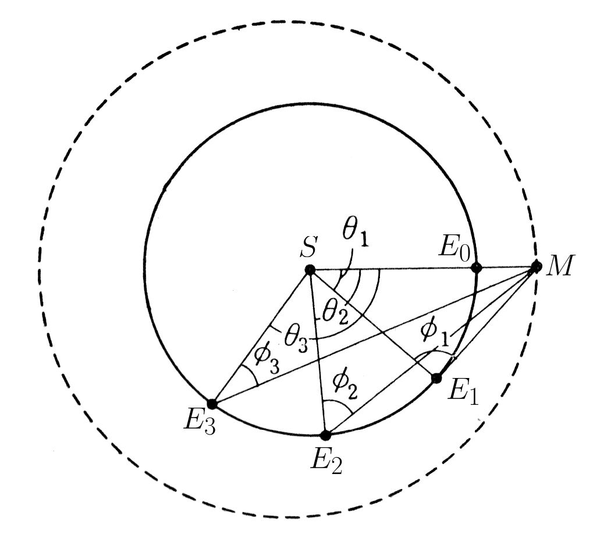
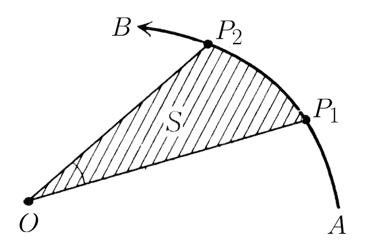

在我们如今的生活中，处处都可以见到物理学的影子。就拿我写这本书所在的这幢公寓的小房间来说，天花板上的荧光灯发出亮光，书架上摆放着电话、收音机和磁带，角落里的电冰箱发出微弱的声响，灶台上的换气扇在不停地转动。往窗外看，数根电线架在电线杆之间，电流在电线里穿梭，传递着能量和信息。再看对面的一幢大楼，楼顶上高高竖立着特高频通信天线，下面还可以看到一个水箱，电机将水从下面抽上来，蓄积在这个水箱里。不管是对面那幢楼，还是我现在所在的这幢楼，它们的外墙之中都有钢筋，这些钢筋都要按照物理学方法测量其强度，然后再根据物理学定律进行计算并组装起来，这样才能够支撑起建筑物以抵御地震和强风。物理学这一学问已经成为支撑现代文明的骨架，我们一分一秒都离不开它。
既然我们身边很多东西都是拜物理学所赐，那么物理学到底是一门怎样的学问呢？它又是在什么时候、在哪里、由谁提出来的呢？现在那些被称为物理学家的人们，又是在为了什么而做着什么样的工作呢？这些工作又会在将来为我们带来些什么呢？
物理学家在创立物理学时离不开数学的帮助，在数学中，一般先要对其探讨的对象进行定义。当然，近代数学中也可以不定义对象，而是以无定义的公理系统作为起点。然而，对于物理学来说，我们既不可能对它进行定义，也不可能对它建立一个公理系统。因为物理学这一学问，从创立至今一直在不断变化，将来也应该会继续变化下去。
不仅是物理学，科学本身亦是如此，无论在任何时代，都是在前人的基础上进行积累和发展的。有时候，我们会继承前人的观点，并将其打造得更加完善；有时候，我们则需要打破前人的狭隘思想，开辟出新的天地——科学就是这样不断变化的。因此，在这样的变化过程中，物理学家究竟以怎样的方式做过什么，或者说正在做着什么——这样的问题我想应该还是可以回答的。
话说回来，尽管我们无法给物理学下个定义，但还是需要对它所探讨的对象以及大致的游戏规则和势力范围作一些规定。当然，这些要素也是不断变化的，在这里，我们暂且认为物理学是这样一门学问：
以观察事实为依据，探求我们身处的自然界中所发生的各种现象——但主要限于非生物的现象——背后的规律。
之所以说“主要限于非生物”，而没有完全将生物排除出去，是因为现在有一门学问叫作“生物物理学”，大家可能也都听说过。此外，“以观察事实为依据”这句话，是为了强调物理学不是一种以纯粹思辨为依据的学问。至于“自然界”“现象”“规律”，以及“背后”“观察”“思辨”这些词具体是什么意思，这里暂且不作定义，大家以自己的常识理解就好。就像以无定义的公理系统为起点的数学一样，本书不妨更进一步，斗胆通过讲述这些无定义概念的故事，对“物理是什么”这一问题做出回答。
那么，物理学这个游戏到底是从什么时候开始，在什么地方确立了其最基本的游戏规则呢？大多数学者都认为是在16世纪到17世纪的欧洲。正如前面所提到的一样，物理学这一学问也是在前人的学问的基础上发展起来的，这一点毋庸置疑。不过，在物理学出现之前，对于自然规律的探索并不都是以观察事实为依据的，这其中包含仅通过纯粹的思考来确立观点的思辨主义或神秘主义的哲学、相信任何现象都是神的旨意的宗教，以及自然哲学等学问。除此之外，还包括一些我们现在已经不认为是学问的东西，例如巫术和魔法。
话说回来，尽管巫术和魔法现在已难登学问的大雅之堂，但无论是物理学，还是它的兄弟化学，在它们的发展过程中，巫术和魔法都扮演了不可忽视的角色。具体来说，占星术之于物理学，炼金术之于化学，它们之间都有着剪不断的密切联系。
自从人类知道如何冶炼金属，以及如何预测日食和月食开始，应该说就已经有了炼金术和占星术的雏形。不过，炼金术和占星术形成后来在欧洲流行的体系，一般认为应追溯到公元前2世纪到公元前1世纪时期，位于尼罗河口的亚历山大港。
亚历山大港据说是由出身古希腊边境马其顿地区的亚历山大大帝所开创的城市。亚历山大大帝统一了当时处于内战纷争之中的各个古希腊城邦，也许是为了巩固其成果，他决定继续出兵征讨希腊的宿敌波斯，不但击败了波斯国王大流士三世的军队，还将远征的脚步拓展到印度西北部，这段历史恐怕大家都有所耳闻。亚历山大大帝在埃及的尼罗河口用自己的名字建立了一座城市，时间大约在公元前4世纪左右，这座城市背靠尼罗河三角洲的沃土，面向宽广的地中海，凭借优越的地理条件，逐步形成了连接地中海沿岸、波斯、阿拉伯和印度的贸易网络，造就了一个繁华的国际化大都市——亚历山大港。而且，这座城市的创始者亚历山大大帝年少时，他的父王曾请到雅典哲学家亚里士多德做他的家庭教师，因此亚历山大大帝十分热爱学术，他在亚历山大港建立了学校和大图书馆，大力鼓励学术发展。
亚历山大大帝死后，执政官托勒密一世在此建立了新王朝，但统治者对学术的热爱以及对学者的优遇依然不减，希腊本土的很多学者也开始移居至此，可以说古希腊文明的中心已经从雅典转移到了亚历山大港，希腊化文明（Hellenistic civilization）开始结出硕果。活跃于此的古希腊学者包括以几何学闻名的欧几里得、创立圆锥曲线 圆锥曲线是指将圆锥体用刀切开之后所得到的曲线。圆、椭圆、双曲线、抛物线都属于圆锥曲线。相对于以直线和圆为对象的欧几里得几何学，阿波罗尼奥斯所发展的几何学是以这些圆锥曲线为基础的。 理论的阿波罗尼奥斯，以及以提出地心说而闻名于世的克劳狄乌斯·托勒密。此外，传说亚里士多德也经常从雅典到此地访问。
除了希腊派学术思想之外，亚历山大港自然也兼容并包了波斯、阿拉伯等东方派，以及埃及本土派的思想。这些思想相互融合，最终产生了一种不可思议的混合体，混合了金属冶炼和天文观测技术，古文明中的思辨主义、神秘主义和巫术，再加上人们内心深处的欲望和不安，它们相互纠缠交错，形成了一团黏糊糊的奇怪的东西，这就是我们称为炼金术和占星术的东西了。一般认为，炼金术和占星术大约是在12世纪左右才经过罗马传入欧洲的。
后来，炼金术和占星术在欧洲遍地开花，据说16世纪时，欧洲几乎每一位诸侯都有自己的占星术士。当时的政治形势十分不稳定，当需要做出重大决策时，他们就会通过占星术来决定应该如何行动。其中最有名的，莫过于首都位于布拉格的神圣罗马帝国皇帝鲁道夫二世（Rudolf II，1552—1612）了。鲁道夫二世是炼金术和占星术的狂热拥趸，他在皇宫旁边建造了一座大研究所，并从整个欧洲招募炼金术士和占星术士，让他们到这里来开展研究。鲁道夫二世之所以要建立这样一座研究所，是因为占星术可以帮助他维持政权，而炼金术可以炼金以改善财政，不过这位皇帝的脑子貌似有点问题，据说最后变得疯疯癫癫的。尽管如此，或者说正是因为如此，他对天文学的进步作出了巨大的贡献。这样的说法看起来有点怪，但从某种意义上来说，这也正是历史的有趣之处吧。
这到底是怎么一回事呢？原来，为天文学带来划时代发展，并在真正意义上为近代物理学诞生奠定基础的德国学者开普勒（Johannes Kepler，1571—1630），正是在鲁道夫二世的庇护下，也是在这位皇帝的研究所里，完成了他的伟大发现。
自然现象的背后必然存在一定的规律，而人们最早注意到这一点，正是通过观察天体的运动。事实上，尽管方法十分原始，但人类进行天体观测，并由此创立天文学这门学问，这一历史可以追溯到有史料记载之前的上古时代。例如，中国等东方文明和古埃及文明自不必说，美洲大陆的印加和玛雅遗迹中也发现了明显是用于天文观测的建筑物痕迹。人们找到天体运行的规律之后，发现通过这些规律可以预测星星的运行，于是他们就想，能不能用这些规律来预测地上人类世界中的各种事件呢？对于生活在充满不安的世界中的古代人来说，抱有这种朴素的愿望也是无可厚非的。
后来，人们发现地上世界的气候变化与天体运行之间有着密切的联系，于是利用这一经验发明了历法。历法为人们带来了巨大的益处，于是人们就会自然而然地相信，一定存在某种占卜的方法，能够将天体运行与更广泛的事物联系起来，例如人的命运以及社会事件。
然而，即便抛开这种愿望，当我们仰望夜空中那些严格按照规律运行的繁星时，都会被这种深邃的神秘感所触动，亲身体会到在自然的最深处，一定有什么巨大的力量让这些星星准确无误地运行着。我们不禁发问，支配整个自然界运行的那最深处的规律到底是什么？正巧，星星的运动是自然现象中规律性最强的，因此从上古时代，人们就开始不断探索星星运动的规律，并以此探求那个终极问题的答案。而且，这一探求并非满足于肉眼所看到的天体运行这一现象层面的规律，而是更进一步达到了探索世界构造，也就是我们现在所说的宇宙学现在我们所说的“世界”一般指的是地球，但在当时“世界”这个词指的是宇宙。 的层面。
为了寻找问题的答案，我们刚才提到了亚历山大港的天文学家托勒密所创立的天文学模型，也就是地心说，这是一种以地球为中心的宇宙理论。根据这一学说，有七颗行星在围绕地球运行，分别是月球、水星、金星、太阳、火星、木星和土星，它们的运行方式是由两个圆周运动叠加而成的复合圆周运动。托勒密将其宇宙理论写成了一部长达13部的长篇大论，我在这里也无法具说其详，不过大体上可以理解成下面这个样子。
想必大家应该知道，我们在天上所看到的星星中有恒星也有行星，恒星在天上排列成固定的形状（即星座）一齐转动，这就好像有一个巨大的球把我们包裹在里面，这个球不停地转动，而恒星就附着在这个球的表面。星座不但形状固定，其位置也是固定的，和地面上观测的地点和时间无关，这就暗示了地球位于这个天球的中心。相对地，行星的位置不是一成不变的，它们穿行于星座之间，有时与星座同向运行，有时又与星座反向运行。行星在天球上的运行轨迹是曲折往复的，这意味着它们并不是单纯地围绕地球做圆周运动。
因此，托勒密提出，行星的运动是由两个圆周运动组合而成的。具体来说，他首先想象有一个以地球为圆心的大圆，然后再想象有一个圆心位于大圆上，并绕大圆转动的小圆，而行星则在这个小圆上转动。其中，小圆叫作“本轮”（epicycle），而大圆叫作“均轮”（deferent）。这个模型看起来过于复杂，而且有明显的人工痕迹，但在当时的观测水平下，人们所能够看到的天球面上的所有行星运动这里所说的天球面上的行星运动，并不是指我们每天看到的东升西落的运动，而是指行星与天球之间的相对运动。以太阳为例，行星运动并不是指太阳每天从我们头顶划过的这种运动，而是指太阳每过一年回到天球上的初始位置的运动。 ，都可以用这个模型来解释。
托勒密提出地心说是在公元2世纪左右，这一学说在提出之后相当长的一段时期里都占据着统治地位，大多数人都信奉这一学说，直到16世纪哥白尼（Nicolaus Copernicus，1473—1543）提出了日心说，才动摇了它的地位。
正如大家所知，哥白尼的日心说是一个以太阳为中心的世界观，其中水星、金星、地球、火星、木星和土星都围绕太阳运行。如果要用一句话来概括哥白尼的学说，那就是行星之所以在天球面上时而顺行时而逆行，并不是由托勒密所说的那种复合圆周运动所导致的，而是因为我们观测它们时所处的地方，也就是地球本身，同样是在运动的。进一步说，我们所看到的天体的周日运动，实际上是由于地球自转而产生的视觉现象；而天体的周年运动，则是由于地球公转而产生的视觉现象。尽管地球也在运动，但星座的大小看起来是不变的，这是因为天球本身非常大，所以相对而言，我们可以认为地球始终处于天球的中心位置，这就是哥白尼学说的内容。
如果从纯粹的数学角度来看，哥白尼的学说相当于将观察天体的视点从地球转移到了太阳，这样一来行星运动就从复合圆周运动变成了简单圆周运动，仅此而已。实际上，哥白尼发表该学说的著作序文中有这样一段前言，大意是说地心说和日心说在本质上并没有区别，这段话是这样说的：
天文学并非试图寻找行星不规则运动的“原因”，即便找到了该原因，也并非意味着要将其当作真理去说服他人，而只是为天文学家计算天空中日月星辰之运行提供正确的基础，因此如果对天球上所见的同一运动存在不同的假说，则天文学家将选择其中更容易解释的一种。
当然，一般认为这段前言并非出自哥白尼本人，而是出版该著作的神学家安得利亚斯·奥西安德尔（Andreas Osiander）在出版时加上去的。我们不知道这段话到底是这个人的真实观点，还是为了回避来自教廷的压力而为之，无论如何，至少哥白尼本人相信自己的工作比单纯的“容易解释”更有价值。事实上，哥白尼的学说包含了托勒密学说中所没有的一个重要元素，因此比后者的内容更加丰富。
关于这个重要元素，我们将稍后探讨，但无论如何，日心说不仅提出了一个比地心说更加简洁的世界观，同时将人类观察自然的视点从地球这一狭隘的世界中解放出来。这一点堪称是革命性的，称日心说标志着近代天文学的开端也正是因为这一点。在哥白尼发表其学说半个世纪之后，日心说才被真正赋予了超越“容易解释”“内容丰富”的意义，后来开普勒提出了他的理论，为牛顿的工作奠定了基础。
刚才的内容似乎已经偏离了占星术的话题，然而天文学得到如此发展的背后，占星术多多少少扮演了一定的角色。很多例子可以佐证这一点，据说托勒密在当时是一位颇具威望的占星术士；刚才我们提到的天文学家开普勒，他可谓是时代的宠儿，为探求行星运行的规律倾注了毕生的心血，最终提出了沿用至今的开普勒定律，而这一切的起点也是因为占星术。
然而，我们需要关注的并不是开普勒的动机，而是他能够完成这一伟大发现的原因，这是因为他的研究方法和前人相比有着根本性的不同。古代哲学家所提倡的自然哲学大多不以观察作为依据，而是带有思辨所伴随的强烈的神秘主义色彩，开普勒自身也像前人一样，时常在神秘主义的森林中迷失方向。然而，引领他完成这一伟大发现的并非这样的思辨，也不是巫术，而是以准确的观察事实为依据进行严密的数学推理，这种方法是在前人身上难得一见的，而这也正是近代物理学所采用的方法。与他同时代的另一位学者伽利略（Galileo Galilei，1564—1642）所主张的“实验”，也是一种前人所未能重视的强力武器。后来，新一代学者牛顿（Sir Isaac Newton，1642—1727）将伽利略的“实验”与开普勒的“观察”相结合，奠定了“以观察事实为依据探求自然规律”这一物理学的特质。我刚才曾说，物理学这门学问是在16世纪到17世纪确立的，指的正是这件事。
刚才我们简单梳理了自然哲学如何从原始的哲学中脱胎出来形成了物理学，又如何洗去身上的巫术和魔法痕迹。然而，为了让大家更明确地理解古代自然哲学与物理学之间特质的差异，我们需要对开普勒、伽利略和牛顿的工作和思想进行更具体的阐述，这也是后面的章节所要涉及的内容。正如大家所知，伽利略曾因异端嫌疑在罗马教廷接受审判并被判有罪，因此我们的话题必然要涉及宗教与物理学的关系。然而，宗教与科学的关系这个命题对我来说有些过于庞大了，因此对于这个问题，我们只能浅尝辄止。
物理学的特质得以明确的16世纪到17世纪到底是怎样一个时代呢？到底是离我们很近还是很遥远呢？也许大家对于这个时间无法一下子产生具体的印象，因此我来列举同时期日本所发生的一些事件，供大家参考。哥白尼提出日心说是在1543年，这时火炮刚刚传入日本。此外，德川时代的数学家关孝和与牛顿正好是同一时代的人物。开普勒和伽利略位于上面两个年代的中间，当时日本正好是丰臣家灭亡，德川家兴起的时候，在牛顿诞生三年之前，日本进入了锁国时代如果对应中国历史的话，哥白尼提出日心说时是明朝嘉靖年间，开普勒和伽利略对应明的衰落和清的兴起，而牛顿生活的年代则对应清朝顺治到康熙年间。——译者注 。物理学就是在这样一个时代从欧洲发展起来的。
1. 开普勒的摸索与发现
作为本书的第一章第1节，让我们从开普勒讲起。正如之前所提到的，开普勒曾经也相信占星术的神秘教义，也许是为了维持生计，据说开普勒在年轻时也做过占星的活计。不过，他对当时的占星术士所使用的随意的、形式化的占卜方法是持怀疑态度的。
占星术士在占卜人的运势时，会将被占卜者诞生时的星象填写到一张标有天球十二宫的星图上，并根据星图的内容来预测被占卜者的运势。然而，开普勒对此表示怀疑：这种方法到底有什么依据呢？后来，开普勒的思想发生了转变，他认为天文学家的任务是观察天体运行的真正形态，并找出隐藏在其背后的规律。
开普勒的一位占星术前辈也抱有同样的想法，这个人就是开普勒十分尊敬的老师第谷·布拉赫（Tycho Brahe，1546—1601）。第谷是丹麦贵族，也是皇家御用占星师，据说他非常看不起那些拿粗制滥造的天体运行表来进行占卜的草根占星术士。因此，也许是想要绘制一张更加精密的运行表，第谷说服丹麦国王建造了一座大天文台，并配置了一台据说是当时世界最大的四分仪。第谷在这座天文台里进行了前人无法企及的高精度观测，据说这是在没有望远镜的情况下所能达到的最高的观测精度了。不仅如此，前人的运行表是根据间隔时间较长的粗略观测结果进行插值计算得到的，第谷并不满足于这样的精度，于是他改为以更密集的时间点进行实际观测。
然而，第谷找丹麦国王要了那么多钱，却只做一些其他占星术士都不做的观测活动，于是国王身边的人认为这是在浪费财力。面对这些人的不理解，第谷的态度十分顽固和傲慢，结果他选择离开丹麦，去投奔鲁道夫皇帝设立的那个研究所。第谷可谓声名远播，他来到布拉格的消息不胫而走，当时怀才不遇的开普勒还在靠占星维持生计，年方28岁的他听到这个消息之后，立刻动身背井离乡前往布拉格，一心想要拜第谷为师。
第谷是一位优秀的观测家，但他的数学功底似乎不是很好，因此他从四分仪上读取的大量原始数据只能原封不动地堆在手里。这些数据能够体现行星在天球上的运动，但要通过这些数据计算出行星的运行轨道需要一定的数学才能，而要论数学才能，开普勒在当时算是首屈一指的。从这个意义上来说，即便是不再相信占星术的我们，也不禁要感叹第谷与开普勒的相遇真乃“天作之合”。
第谷也十分信任他的这位学生，开普勒进入门下不久，第谷就去世了，据说在临终前他曾留下遗言，将自己所有的观测数据全部交给开普勒。拿到老师花费16年时间积累下来的精密观测数据之后，开普勒开始尝试对行星轨道进行精密的计算。
开普勒为什么要做这样的工作呢？这是因为人们一直以来相信托勒密和哥白尼的模型可以和观测数据很好地吻合，但后来发现并非如此。人们发现，根据这些模型所计算出的结果包含微小的误差，经过很长时间之后这些误差就会积累放大，与实际观测到的行星位置产生偏差，特别是火星，其理论和实测之间的偏差很大。看来是时候对这些古老的模型进行修正了。出于这样的背景，开普勒首先开始尝试利用第谷的观测数据计算火星的准确运行轨道。
在正式讲开普勒的故事之前，我们还有一个话题没说完。之前我们提到，哥白尼的日心说比托勒密的地心说拥有更加丰富的内容，关于这一点需要详细解释一下。
正如之前所讲过的，如果用一句话来概括哥白尼的学说，就是行星进退往复的原因并不是它们在做复合圆周运动，而是因作为观察者的我们所在的地球也是在运动的。大家应该都知道，当我们乘车时，窗外的电线杆、马路对面的房子以及远处的山，看起来都像是在往后退一样。这时，我们从车窗看到的各种景物的运动，实际上是车本身的运动，因此我们会觉得窗外的景物在以和车相同的速度朝相反的方向运动。同样，如果哥白尼的解释是正确的，那么托勒密模型中，任何行星在本轮上的运动，实际上都是地球本身绕太阳公转的运动。因此，所有行星的本轮应该大小相同，在本轮上的运动方式也应该相同，而且太阳绕地球的公转也应该可以用相同的方法来解释。这些事实在托勒密的学说中是不存在的。
实际上，第谷还提出过一个巧妙的模型，在承认行星本轮大小相同这一日心说观点的同时，认为地球本身是不动的。这个模型认为，太阳围绕不动的地球旋转，而水星、金星、火星、木星和土星则围绕太阳旋转。按照这个模型，行星的运动还是复合圆周运动，和托勒密模型不同的是，行星的本轮的圆心是太阳，而太阳则在均轮上运动。也就是说，这个模型把托勒密的本轮理解为均轮，把均轮理解为本轮，这是第谷模型的一大特色。此外，本轮的圆心上存在太阳这样一个实体，这也是该模型的另一大特色。因此，我们可以认为这一模型是介于托勒密和哥白尼之间的一种折中模型。
如果所有行星的本轮大小相同，那么距离我们越远的行星，其复合圆周运动的幅度看上去就越小，在天球上进退往复的振幅也就越小。因此，行星运动的振幅与其和我们之间的距离，也就是其均轮的大小是成比例的。然而，托勒密的学说中并没有阐述这一规律，也就是说，托勒密模型没有告诉我们如何计算均轮的半径。托勒密的学说认为，每个行星都有自己的运行规律，它们按照各自的规律做不同的运动，但并没有提出一个能够支配所有行星运动的统一规律。
从这一点来说，和托勒密相比，哥白尼的学说除了更容易解释之外，其内容的丰富性也远远胜于前者。不过，地球运动会不会带来什么灾难？地球运动又和宗教教义有着怎样的联系呢？这些问题需要等到伽利略出现之后才能得到解决。
刚才我们谈到了“容易解释”这个问题，但从现实来说，日心说恐怕也并不算容易解释。这一点我们后面还会再提到，那就是即便采用哥白尼的模型，围绕太阳旋转的地球以及其他行星的运动也并不能用简单的圆周运动来解释。
无论是托勒密还是哥白尼，大部分古希腊学派的天文学家都特别拘泥于圆形曲线上的均匀旋转（等角速度旋转）。这其中的原因在于，从古希腊哲学家毕达哥拉斯、柏拉图时代到亚里士多德时代，一直传承着一大原则。简单来说，那就是圆是一种没有起点和终点的曲线，而且曲线上所有部分都是均匀的（即曲线上任意部分都可以互相重合），匀速运动在时间尺度上也是均匀的，而天体运动正是没有开始、没有结束、永恒不变的，因此天体运动必然是圆形的、等角速度的。
从这一原则出发，天体做匀速圆周运动是最理想也是最容易解释的一种情况；也就是说，行星在圆形的轨道上，以等角速度围绕圆心旋转。然而实际的天体运动无法用这种简单的模型来解释，于是天文学家们开始想尽各种办法，试图在不违背“圆形”和“均匀旋转”这两个大原则的前提下解决这一问题。
以地心说中太阳围绕地球旋转的运动为例，根据观测，太阳的运动有时快有时慢。为了解释这一现象，托勒密提出地球的位置不在太阳轨道的圆心，而是在偏离圆心的位置。这一理论认为太阳依然是在圆形轨道上做匀速运动，也就是说并没有违背上述两个原则，而从地球上看起来，在近日点时太阳运动速度快，而在远日点时太阳运动速度慢。在这里，太阳的运动并不是以地球为圆心的，这被称为“偏心圆运动”，地球所在的位置称为“偏心点”。根据这一解释，尽管太阳实际上是做匀速圆周运动的，但由于地球与太阳之间的距离可变，因此从地球上看起来太阳的运动速度也是可变的。
在这个问题上，还存在其他的可能性，即地球虽然位于太阳轨道的圆心，但太阳并非围绕该圆心做匀速旋转，而是围绕偏离圆心的某一点以等角速度旋转。这里的某一点 称为“均衡点”这个词原文为equant，这是一个仅在托勒密模型中出现的词，因此中文存在各种不同的译法，其他译法包括“偏心匀速点”“偏心等距点”“对称点”等。——译者注 ，当太阳在轨道上靠近均衡点时运动速度慢，当远离均衡点时运动速度快。在这一解释中，观测到的速度变化不是“看起来”的，而是实际发生的，但通过引入均衡点这一偏离圆心的点，使得其并没有违背“均匀旋转”的原则。这种做法实际上将距离的中心和旋转的中心相分离，尽管的确没有违背原则，但看起来总觉得有些牵强附会。不过，托勒密却将均衡点和偏心点结合起来，成为确立其世界观的强大武器。
然而，行星的进退往复运动毕竟无法仅通过偏心点、均衡点这样的理论来解释，必须用更复杂的机制才能说得通，这个更复杂的机制就是我们之前提到的本轮。不过，对于在均轮上运动的本轮来说，其中心也必须兼用偏心点和均衡点的机制来解释。于是，在对“圆形”和“均匀旋转”的原则做出上述这些变化之后，总算是让实测值和计算值相互吻合了。
前面我们讲了托勒密的地心说，到了哥白尼这里，尽管地球的运动很大程度上抵消了本轮的作用，然而行星的运动依然无法用简单的匀速圆周运动来解释。为了在不违背“圆形”和“均匀运动”原则的前提下与实测值相吻合，看起来还是需要一些更复杂的变化才行。然而，哥白尼却拒绝承认托勒密的强大武器——均衡点，认为这过于牵强附会 ，但这样一来，要解释行星运行速度的变化，就只能重新引入本轮。于是，哥白尼模型中所使用的本轮数量比托勒密还要多，从结果来看，日心说的确比地心说内容更加丰富，但要说是否容易解释，恐怕是半斤八两。更何况后来人们已经发现实测值和理论值产生了偏差，这表明两种理论都需要从根本上进行修正。现在轮到开普勒出场了。
火星之谜与开普勒
开普勒来到第谷门下之后，等待他的第一件事就是研究火星。当时，火星的运动是一个未解之谜，而第谷的研究室正好在研究这个问题，而且负责这项研究的人正对此束手无策，这时，开普勒把这项工作接了下来。按照开普勒的说法，就在第谷的研究室在火星问题上陷入泥潭之时，他正好到了，这一定是神的旨意。这种说法确实符合开普勒的风格，无论如何，如果没有这次机遇的话，恐怕也就没有他后来的伟大成果了。
一开始，开普勒还是采用前人的方法来进行研究。然而，前人过于拘泥于“圆形”和“均匀旋转”这两大原则，开普勒对此持怀疑态度，而且随着研究的进行，他的怀疑开始越来越重。我觉得开普勒大概是这样想的：“圆形”和“均匀旋转”这两大原则，前者来自几何学，后者来自运动学，用在车轮和杠杆等组成的机械上比较合适，但对于宇宙来说，实在显得过于“机械”了。根据他的想法，太阳是产生行星运动的“物理原因”的中心，在宇宙中扮演着重要的角色，而且这应该是一种超越几何学的存在。他将火星研究的成果整理成一部著作，名叫《新天文学》。在这部著作中，开普勒反复强调了他的观点，即太阳才是让所有行星围绕其旋转的动力源。抱着这一观点，经过长期大量的计算，他终于发现行星其实是在以太阳为焦点的椭圆形轨道上运行的，其中太阳和行星之间的距离，以及行星的运行速度，都遵从同一个简洁的规律。
开普勒的发现表明，我们不能将行星当成一个受“圆形”“均匀旋转”这些条条框框所支配的机械。而且，通过这一发现，开普勒更加确信，行星之所以围绕太阳运动，是因为太阳为它们提供了动力。关于几何学和运动学的古老原则，开普勒本人是这样说的：“大家可能很难相信我在太阳的动力这个问题上付出了多少心血，但之所以历经如此磨难，是因为我被古老的思想所束缚，将太阳的动力牢牢拴在一台台圆形的水车上。”
接下来，我们来看一看开普勒到底是怎样完成这一重大发现的。不过，正如开普勒本人所说，他所付出的心血是难以置信的，这其中包含了十分复杂的计算过程，我们在此无法具说其详。不过，从一开始的一个模糊的想法，到最终凝结成为一个伟大的发现，通过回顾开普勒的整个思考过程，我们可以从一个侧面感受到物理学中的所谓“自然规律”，到底具有怎样的含义。
刚才我们提到，开普勒一开始是按照前人的方法来计算火星轨道的，但是他所使用的数据却是第谷观测到的最新数据。利用这些数据，开普勒获得了他的第一个成果，即对火星轨道平面每颗行星的轨道都各自形成一个平面，称为轨道平面。 与地球轨道平面的夹角进行了精确的计算，同时也计算出了两个轨道平面交叉时所形成的交线的方向。这里开普勒得到了一个重要的发现，那就是太阳正好位于这两个轨道平面的交线上，这可以解释为，太阳是火星和地球共同的运动中心。
接下来，开普勒尝试计算火星围绕太阳的运动轨道。这项计算工作十分复杂，因为第谷的数据只能直接得到从地球上看到的太阳的方向，以及从地球上看到的火星的方向，但并不包含任何表示距离关系的数据。开普勒没有找到求出距离关系的方法，迫不得已，他只能利用托勒密的模型，假设轨道的形状是圆形，太阳位于偏心点，而火星围绕均衡点做等角速度运动，然后尝试用这些圆和点来拟合第谷的观测数据。
然而，即便在建立了假设的情况下，计算的过程依然极其复杂。据说开普勒的计算花费了数年的时间，在即将大功告成的时候，他发现计算得到的角度与第谷的数据有8分的偏差，因此宣布之前的所有工作失败。话说回来，这个误差其实非常小，因为在过去的计算中，出现几度的误差都被认为是正常的。不过开普勒的学术良心无法允许出现哪怕仅有8分的误差，如果他没有这份严谨的话，恐怕也就与后面的发现失之交臂了。
开普勒决定抛弃之前的假设，就在这时，他想到了一个巧妙的方法，可以用纯几何计算通过观测数据求出太阳、地球、火星这三个天体之间的距离、角度以及时间关系。尽管关于这个方法的详细解释已经超出了本书的主题，不过这个例子很好地体现了开普勒除了是一位神秘学家之外，还是一位思维缜密的思想家，因此我们将这部分内容以注释的形式展现给大家。

图1
开普勒首先尝试计算地球围绕太阳运行的轨道，其中所采用的巧妙方法就是下面这一系列的推理过程。出于简化的需要，在这里我们假设地球和火星的轨道平面是完全重合的。刚才我们讲过，地球和火星的轨道平面是相互交叉的，并非完全重合，但其实这个夹角非常小，即便把它们当成完全重合，所产生的误差也是可以忽略的。于是，在该轨道平面上：
将火星、太阳和地球的位置分别记为$M$、$S$和$E$。（参见图1。这是一张概念性的图，并非展现实际的角度和尺度。）
当时人们已经知道，地球绕太阳运行的周期为365天，火星绕太阳运行的周期为687天。
接下来，找到一个地球位于火星和太阳中间，且三者排成一条直线的时间点（地球位于行星和太阳中间且排成一条直线的情况称为“冲”），将这个时间点记为$t_0$，将该时间点地球所在的位置记为$E_0$。（$S$与$E_0$的距离$\overline{SE_0}$是未知的）此时火星的位置为$M$。
将687天后的时间点记为$t_1$，此时火星再次到达$M$，将此时地球的位置记为$E_1$（$\overline{SE_1}$同样未知）。由于从地球上看到的太阳的角度变化可以通过每天的观测数据获得，因此可以知道时间点$t_1$时的$\angle E_0SE_1 = \theta _1$。而且，根据观测数据也可以得到从地球看到的太阳和火星间的角度$\angle SE_1M = \phi _1$。
已知角$\theta _1$和角$\phi _1$可以确定$\triangle MSE_1$的形状，因此我们可以求出时间点$t_1$时的$\overline{SE_1}/\overline{SM}$。（即可以求出未知的$\overline{SE_1}$以$\overline{SM}$为单位的相对值。）
将再经过687天后的时间点记为$t_2$，此时按照同样的方法，可以求出$\angle SE_2M = \phi _2$以及$\overline{SE_2}/\overline{SM}$。
将再经过687天后的时间点记为$t_3$，此时按照同样的方法，可以求出$\angle SE_3M = \phi _3$以及$\overline{SE_3}/\overline{SM}$。
重复上述过程，可以求出在时间点$t_1,t_2,t_3,\cdots$时以太阳为中心的地球的极坐标（以$\overline{SM}$为单位）。
同样，现在已知地球轨道上的点$E_0,E_1,E_2,\cdots$，将各个点所对应的时间点$t_1,t_2,t_3,\cdots$分别减去365的某个适当的整数倍，我们就可以得到在围绕太阳公转一周的范围内，地球经过轨道上这些点的时间。
已知轨道上的点所对应的时间，就可以求出以$\overline{SM}$为单位的地球的运行速度。
通过上面的方法，我们就搞清楚了地球围绕太阳的运行方式，接下来开普勒开始解决火星运动的问题。他的推理过程如下。
在计算地球运动时，我们从火星的“冲”为出发点，根据间隔687天的角度$\theta$和$\phi$求出以$\overline{SM}$为单位的地球的极坐标。现在，我们还是重复同样的过程，只是将时间间隔改为“冲”的间隔。于是，第一次“冲”时，设火星与太阳之间的距离为$\overline{SM_1}$， 则可求出以$\overline{SM_1}$为单位的地球轨道。接下来，第二次“冲”时，又可以求出以此时火星与太阳的距离，即$\overline{SM_2}$为单位的地球轨道。由于地球的轨道本身是不变的，因此将上面的两个数据与最初的数据进行比较，可以求出$\overline{SM_1}/\overline{SM}$以及$\overline{SM_2}/\overline{SM}$。而且，每次“冲”时火星的方位角（与地球的方位角一致）可以通过观测数据得到，于是可以求出第一次和第二次“冲”时以$\overline{SM}$为单位的火星的极坐标。这样，我们就得到了每次“冲”时以$\overline{SM}$为单位的火星的极坐标，将这些点对应的时间减去687的某个适当的整数倍，就可以求出火星绕太阳公转一周的范围内，火星经过轨道上各点的时间，从而求出以$\overline{SM}$为单位的火星的运行速度。
这就是开普勒所想出来的方法，他的几何洞察力之敏锐，推理能力之强，让我们不禁惊叹不已。从中可以看出，他身上拥有一个普通神秘爱好者所不具备的能力，而在当时能够将几何学运用得如此纯熟的，恐怕除了开普勒之外再无他人了吧。
下面我们来看看开普勒利用这一巧妙的方法到底推导出了怎样的结果。他首先假设地球的轨道为圆形，但太阳并不位于轨道的圆心，而是位于偏离圆心0.018倍半径的一个点上，在这个前提下，他发现地球在远日点和近日点时的速度正好和相应的日地距离成反比。由此他推断，这一比例关系应该在除了远日点和近日点以外的其他点也能成立；也就是说，在轨道上的任意位置，速度和距离都是成反比的。不过，我们发现开普勒实际计算中所使用的关系不是速度，而是角速度×距离，实际上用角速度才是正确的，他将这一点表述为“面积速度守恒”。

图2
假设一个物体在以点$O$为中心的轨道$AP_1P_2B$上运动，在单位时间内从$P_1$移动到$P_2$，则线段$\overline{OP_1},\overline{OP_2}$与弧$\overset{\frown}{P_1P_2}$所包围的平面的面积，即图2中阴影部分的面积$S$，称为关于点$O$的面积速度。
接下来再看火星的运动，按照开普勒的方法计算火星的极坐标后，发现火星的各个位置点并不位于一个圆上。刚才的计算都是基于圆形轨道的假设前提来进行的，这意味着这些计算都只不过是空中楼阁，与实测值无法吻合。
于是开普勒开始思考一个问题，既然圆形不对，那么应该是一个怎样的曲线才对呢？他首先想到的是卵形线，但是他发现这样的曲线无法满足面积速度守恒的关系。开普勒在数字和图形的迷宫中徘徊，一条路走不通就尝试另一条路，走来走去发现又回到了原点。就在他感到快要迷失方向的时候，有一天他发现在之前走过的一条路上，又遇到了一些看起来似曾相识却又好像包含什么神秘含义的数值。仔细研究之后，他终于发现了这些数值的意义，原来他所苦苦追寻的火星轨道其实是一个椭圆。
于是，开普勒终于得出了结论：火星的轨道是椭圆形，太阳位于其焦点上，且火星的速度满足面积速度守恒的关系。经过长年累月的烦琐计算，火星运动的真相终于展现在了他的眼前。
4. 热力学的确立
关于热的本质到底是什么，刚才我们提到，在卡诺的时代，认为热是一种叫作“热质”的物质的观点十分流行，但是也有其他一些不同的观点。18世纪末，本杰明·汤普森（伦福德伯爵）发现，在制造火炮时，有一个在炮管上镗孔的工序，在这个工序中会产生大量的热，他认为外力做功所产生的摩擦热的量，与功的量之间存在密切的联系。因此，汤普森提出了一种理论，认为热不是一种物质，而是一种肉眼无法观察到的，物体内部存在的运动。
在卡诺的时代，汤普森的理论尚未成为主流，但卡诺也渐渐开始注意到这一理论，在卡诺去世之后发现的他的一本笔记上，就有“伦福德伯爵的实验、车轮与轴的摩擦，要实验”的记录。卡诺还自问自答道：如果运动可以产生热，那么就等于承认运动可以产生物质，答案当然是否定的，运动只能产生运动。因此，尽管卡诺在《论火的动力》中采纳了热质说，但并不等于他真的信奉这一理论。
由此可见，卡诺的心中还是摇摆不定的。他在笔记中还自问道：如果运动可以产生热，那么反过来说，热显然也可以产生运动，但为什么在这个过程中只有一个热的物体是不行的，还必须得有一个冷的物体呢？
卡诺在《论火的动力》的开头就提出，在由热获得动力的过程中，必然伴随热从高温向低温的转移，也许是觉得不回答这个问题的话，论文在逻辑上就不完整，因此卡诺在笔记上记录了进一步探索热与动力之间的关系的必要性：“将伦福德伯爵的实验放在水中进行，在水中对金属打孔，计算产生的热量和消耗的动力之间的关系，然后再用各种不同的金属和木材进行实验。”可惜的是，《论火的动力》一直无人问津，卡诺也还没来得及完成这些实验就去世了，年仅36岁，死因据说是霍乱。
卡诺未能完成的实验，在他去世11年之后，由著名的焦耳（James Prescott Joule，1818—1889）完成了。焦耳用桨轮搅拌水，测量因此产生的热量，从而测出了热功当量，这一实验大家应该都不陌生。
“卡诺定理”的复活
于是，当热与功之间的当量关系被发现后，热质说就变得非常站不住脚了，这时热能说开始代替热质说成为主流。汤普森认为热是肉眼无法观察到的物体内部的运动，我们暂且不管正确与否，但这一观点意味着热是一种能量。因此，正如力学上物体的能量分为动能和势能，那么热也可以看作是热能。
在力学上，当物体的动能和势能相互转化时，以及当物体对外做功，或者外界对物体做功时，动能和势能的总和是不变的，也就是守恒的。同样，当热在物体之间转移时，热和运动相互转化时，以及对外或外界对其做功时，热能、机械能（动能和势能）以及所做的功的总和此时热和功用同一单位来表示。 是守恒的。上述理论逐渐被更多的人所接受，根据这一理论，我们在介绍瓦特的时候提到的布拉克教授所说的“热量”，其实就是指热能的量。
包括热能在内的广义的能量守恒定律是在卡诺去世后不久，由迈尔（Julius Robert von Mayer，1814—1878）和亥姆霍兹亥姆霍兹认为，除热能之外，还有产生电磁现象的电磁能，而这些各种形态的能量的总和是一定的（守恒的）。 （Hermann Ludwig Ferdinand von Helmholtz，1821—1894）提出的。那么，我们应该如何回答那个让卡诺心神不宁的问题呢？也就是说，在用热做功时，为什么既需要高温还需要低温呢？根据迈尔和亥姆霍兹的能量守恒定律，把高温物体中的热能全部转换成功应该也是没有任何问题的。那么，同时需要高温和低温这一点，是不是和能量守恒定律相互矛盾呢？
于是，既然卡诺的《论火的动力》中论证的前提条件都需要重新审视，那么其结论，即热机的效率存在上限，也就跟着存疑了。实际上，焦耳发现卡诺采用了热质说，因此不但不相信卡诺的论证，而且还断定其结论“卡诺定理”是错误的。另一方面，尽管亥姆霍兹在其论文中引用了卡诺的《论火的动力》，但却没有对这一点进行深入讨论，似乎也是半信半疑。
不过，后来完善了热理论的英国物理学家汤姆森（William Thomson, Lord Kelvin，1824—1907）却持不同的态度。汤姆森看到卡诺的论文时，立刻就感觉到这个理论非常重要。汤姆森在支持迈尔-亥姆霍兹-焦耳 理论的同时，也不想放弃卡诺的观点。
实际上，卡诺的论文发表后20年间一直无人问津，1845年，当时正在巴黎留学的汤姆森发现了它，并将它介绍给全世界。热机的效率与结构和工质无关而是只取决于温度，卡诺所发现的规律以及其推理过程和思考方式，让当时年仅21岁的汤姆森感到无比惊叹，他觉得卡诺的论文不仅是在探讨热机的改良，而是触及了热的本性。汤姆森将温度的定义与热机的效率关联起来，这一想法正体现了他对于卡诺热机的理解。
汤姆森是如何定义温度的呢？我们通常采用的温度定义是一种人为的，比较省事的方法，即将冰的熔点规定为0度，然后在0度和水的沸点温度之间，按照水银的膨胀比例等分成100份。而汤姆森的定义则是更加直接的，以热的本性为基础做出的，他将之称为“绝对温度”。关于汤姆森的绝对温度，我们后面将会讲到。
汤姆森认为，“卡诺定理”是热理论中不可或缺的一部分，因此他并没有像焦耳一样直接否定卡诺的理论。汤姆森曾说：“如果抛弃卡诺的发现，我们将遇到无数的困难，而且恐怕只有在更多实验的基础上建立全新的热理论，才能够克服这些困难。”然而，用热来做功为什么需要低温物体呢？这个问题也让汤姆森感到困扰不已。而且，如果说热不是物质而是能量，那么都用不着焦耳来批判，卡诺在《论火的动力》中的论证就已经错了，这让汤姆森陷入了两难境地。
关于这个问题，德国学者克劳修斯（Rudolf Julius Emanuel Clausius，1822—1888）提出了一个解决方案。困扰汤姆森的问题有两个，即为什么不能只用高温物体获得动力，以及这一热的奇妙性质如何才能不与能量守恒定律发生矛盾。为此，克劳修斯提出了一种新的理论，即对于热的这一奇妙性质先予以全盘接受，并没有什么“为什么”，因为这就是热的本性。这样一来，这一新理论不但与能量守恒定律没有任何矛盾，而且还能与之相互补充，对于以错误的前提推导出的“卡诺定理”，克劳修斯用他的新理论也能够原原本本地推导出来。就这样，克劳修斯通过他天才般的洞察力解决了汤姆森的困扰。
克劳修斯提出了如下两条基本定律，并在其基础上建立了热力学体系。这里用了“热力学”这个词，它是一种与物体和物质热性质无关的，对于任何由热参与的现象普遍成立的一般理论体系。
克劳修斯对于他的两条定律是这样阐述的：
一、功可以转换成热，热也可以转换成功，其中一方的量与另一方的量恒成比例。
二、不可能在不引起其他变化的前提下，使热从低温物体向高温物体转移。
其中第一定律相当于迈尔-亥姆霍兹-焦耳 的能量守恒定律，这里所说的“成比例”，意思是这一比例是一个常数，而这个常数显然就是焦耳的热功当量。当然，如果用同一单位来测量“功”和“热量”，那么“成比例”就可以替换成“相等”。
在这两条定律中出现了“功”“热”以及它们的量，还有“高温”“低温”等术语，对于这些术语我们在此不做定义，大家按照自己的常识来理解即可。不过，后面我们在推导一些结论的时候会用到卡诺的“可逆热机”模型，因此大家需要理解“一点一点 的过程”的定义。关于这一点，请参见
克劳修斯的第二定律还可以换一种方法来表述：
二′、不存在任何热机，能够利用循环过程从一个物体中取出热并将其转换成当量的功。
这一表述与原本的克劳修斯第二定律是等价的即内容是相同的。 ，这一点我们通过可逆热机的定义就可以证明。在这一表述中清楚地提到了“一个 物体”，换句话说，就是指“在没有另一个温度更低的物体的情况下”，这正是卡诺论证的前提，也是汤姆森所无法回答的那个“为什么”。
那么，如何通过克劳修斯的两条定律原原本本地推导出卡诺定理呢？前面我们讲过，卡诺的论证是以热质说为基础的，并没有想到热是一种能量，因此其中确实包含焦耳所指出的错误。那么，具体来说，到底是哪一点出错了呢？
在卡诺的理论中，从热源所吸收的热质，像水力机器中的水一样，不多不少原原本本地被搬运到了冷却器中。热质这一观点原本是化学家所提出的，他们认为热也是一种元素，因此和其他化学元素一样，是不生不灭的，卡诺在《论火的动力》中也继承了这一观点。不过，如果热是一种能量，那么在搬运的过程中一旦做了功，能量就会相应地减少，因此最终到达冷却器的热量也就减少了。
请大家回想一下卡诺证明不存在超级热机的方法，即先假设存在超级热机，于是推导出可以凭空做功的永动机。如果我们仔细研究卡诺的证明方法，就会发现其中实际上隐含了“热质的量在从热源搬运到冷却器的过程中没有变化”这一条件。因此，焦耳无法接受卡诺的这一证明方法。
尽管如此，如果我们接受克劳修斯的第二定律，那么“不存在超级热机”这一卡诺的结论就可以原原本本地成立。克劳修斯的证明方法如下。
首先假设存在能够超越卡诺热机的超级热机，正如我们之前所描述的，超级热机在从热源吸收相同热量的情况下，可以比卡诺热机做更多的功。那么反过来说，在与卡诺热机做相同的功的情况下，超级热机需要吸收更少的热量。因此，与卡诺热机相比，在做相同的功的情况下，超能热机中从热源向冷却器转移的热量更少。
接下来，像卡诺在《论火的动力》中所采用的方法一样，我们先让超级热机正向运转，并将其所做的功储存起来。然后，我们用卡诺热机替换超级热机与热源和冷却器相连接，并用刚才储存的全部的功使卡诺热机逆向运转。于是，热从冷却器逆流回热源，但出于之前所说的原因，逆流的热量要比一开始由超级热机所搬运的热量多。因此，如果将正向和逆向转移的热量相减，结果就是一部分热量从冷却器转移到了热源。
而且，此时超级热机所产生的功已经全部用于卡诺热机的逆向运转，没有剩余的功了。因此，从结果上看，就相当于“在没有引起其他变化的情况下，使热从低温物体转移到了高温物体”，这显然是违背第二定律的，所以如果认同第二定律，就必须否定超级热机。
上述克劳修斯的证明方法与卡诺的证明方法有什么区别呢？我们来简单比较一下。首先，在卡诺的错误证明中，如果存在超级热机，就意味着出现了凭空做功的永动机，而在克劳修斯的证明中，如果存在超级热机，就意味着出现了违背第二定律的机器。凭空做功的机器显然违背了能量守恒定律，也就是违背了克劳修斯的第一定律，但克劳修斯的证明中所出现的机器，虽然违背了第二定律，却没有违背第一定律。因此从这一点上说，这种机器并不是通常意义上的永动机。
然而，如果存在违背第二定律的机器，那么只要把大洋的水温降低1度，就可以产生近乎无限的功，因此这也是一种不逊于永动机的梦幻般的机器。于是，人们将这种机器称为“第二类永动机”，相对地，将传统的永动机称为“第一类永动机”。
这样一来，卡诺在《论火的动力》中所推出的结论，即“热的动力与提取它所使用的工质无关，它的量只取决于热质最终发生转移的两个物体的温度”依然得以成立。可以说，是克劳修斯拯救了割舍不下这一结论的汤姆森。
热定律的数学化
如果说问题就这样解决了，恐怕还早了一点，因为用数学的语言来描述自然规律这一物理学的特性还没有得到满足。我们在第一章中已经学习了开普勒、伽利略、牛顿等人所做的努力，从中我们可以发现，物理学的力量就是能够从少量的基本定律出发，准确地预测出诸多现象。而要发挥这一力量，就必须使用数学的语言。第一章中我们介绍过伽利略的名言：“自然之书是用数学的语言写成的”，因此克劳修斯和汤姆森还剩下一个任务没有完成，那就是发现热的自然规律背后的数学语言。
请大家回忆一下牛顿的工作。牛顿发现了运动的自然规律背后的数学语言，并据此将天地两界的规律统一成了一个体系。同样，如果我们可以将热的自然规律数学化，那么不仅可以统一热机这一个领域，而是可以统一包括所有热过程在内的广阔领域。接下来我们就来讲讲这个话题。
从数学化的角度来说，第一定律没有什么问题。刚才我们讲过，在克劳修斯的表述中，“其中一方的量与另一方的量恒成比例”，这已经相当于是数学语言了。然而，第二定律的数学化一看就没那么容易。“不引起任何变化”“不可能转移”这样的表述，到底应该如何转换成数学公式呢？
当然，第二定律的数学化也并不是完全没有方法，其中的关键在于克劳修斯由这两条定律推导出的卡诺定理，即热机的最大效率只取决于热源和冷却器的温度，这一结论是蕴含着数学内容的。也就是说，“效率只取决于热源和冷却器的温度”这句话，如果用数学语言来表述，就是“效率是一个仅关于热源温度和冷却器温度的函数”。那么现在的问题就是，效率到底是关于这两个温度的一个怎样的函数呢？只要确定了这个函数，我们就得到了一个用数学表述第二定律的重要线索。
下面，我们分两步来确定效率是关于这两个温度的一个怎样的函数。第一步是先进行实验。我们无法实际制造出一台卡诺热机来进行实验，但我们可以通过实验来测量气体和蒸汽在等温或绝热状态下膨胀、收缩时，其体积、压强和温度之间的关系。通过这些数据，我们可以计算出卡诺热机中活塞的运动能够做多少功。此外，气体和蒸汽以及它们所凝结后的液体的比热，以及蒸发所需的热量等数据，也可以通过实验来得到，这样一来，我们就可以具体计算出卡诺热机从热源吸收的热量，或者向冷却器释放的热量。通过上述两个计算结果，我们就可以使用各种工质来计算出效率。
第一步的计算所得到的温度和效率的关系到底是怎样一个函数，想必大家都很想知道，我们留到后面再讲，这一步的重点其实是验证这一关系是否像卡诺定理所说的那样，与工质的种类无关。通过实验来验证卡诺定理是否成立，从“以观察事实为依据”的角度来看，这一步具有非常重要的意义。于是，克劳修斯和汤姆森根据克拉佩龙留下的关于各种气体和蒸汽的数据，以及法国实验家勒尼奥所积累的丰富数据，对卡诺定理进行了具体的计算验证，结果当然是没有问题的。
汤姆森根据实验得到的温度和效率的关系，制作了一张摄氏温度和他的绝对温度的换算表，并且将这一换算关系总结成一个经验公式。然而，这一实验性方法还有一个弱点，那就是它还没有从汽缸、活塞、气体、蒸汽等要素中解放出来。但我们根据实验已经基本验证了卡诺定理是正确的，那么现在我们可以以此为前提，以超越这一弱点的方法来求出温度和效率的关系，这就是第二步所要做的工作。
下面我们来看一看第二步。这一步的特点是，我们需要求出卡诺热机中热量、做功和温度三者之间的关系，但必须抛开汽缸、活塞、气体、蒸汽等与机器结构和工质种类等相关的属性，而且还需要抛开膨胀、收缩、变形等要素，只着眼于机器的功能。
这种方法其实在卡诺推导卡诺定理时已经用过了，克劳修斯修正卡诺的证明时也使用了同样的方法。从这个角度上来看，卡诺热机其实就是一种能够减少高温热库的热量，增加低温热库的热量（但增加量小于前者的减少量），并用减少和增加的热量的差值来做功的可逆的循环机器。于是，对于这样一种机器，其热量、做功和温度之间的数学关系，仅取决于第一定律和卡诺定理。按照这一方法，我们就可以在与机器结构等特性无关的情况下确定效率函数，这一结论应该是普遍性的，即可以消除前面所提到的那个弱点。
在正式开始介绍第二步的具体过程之前，我们需要先对“效率”下个定义。一般来说，从功能上看，热机的效率如我们在
$$\text{效率}=\frac{\text{输出的功 }W}{\text{高温热库减少的热量 }Q_高}\tag{1}$$
其中热量和功必须用同一单位来表示。现在我们暂时只考虑机器正向运转的情况，也就是高温热库热量减少，低温热库热量增加，同时输出功的情况。
下面我们使用第一定律。根据这一定律，将低温热库增加的热量记为$Q_低$，则$W$可定义为：
$$\text{输出的功 }W=\text{高温热库减少的热量 }Q_高\\-\text{低温热库增加的热量 }Q_低\tag{2}$$
显然，这里$Q_高$和$Q_低$均为正数，而且$Q_高$要大于$Q_低$，因此$W$也是正数。
求出$W$之后，我们将其代入$(1)$，就可以得到效率的基本公式：
$$\text{效率}=1-\frac{Q_低}{Q_高}\tag{3}$$
到这里为止我们只用了第一定律，下面我们使用“卡诺定理”。于是，卡诺热机的效率是一个仅关于高温热库的温度（记为$t_高$）和低温热库的温度（记为$t_低$）的函数，因此$Q_高$和$Q_低$之比也是同样的函数，我们可以得到：
$$\frac{Q_低}{Q_高}=t_高\text{ 和 }t_低\text{ 的函数 }F(t_高,t_低)\tag{4}$$接下来的问题就是如何确定函数$F$的形式，即回答：$$F(t_高,t_低)=\text{?}$$
仅根据卡诺热机的功能推导出上述问题答案的过程非常具有教育意义，但这一过程有点过于专业，感觉超出了高中的水平，因此我们把具体过程放在后面的注释里讲，这里只给出答案，即：
$$F(t_高,t_低)=\frac{f(t_低)}{f(t_高)}\tag{5}$$
通过这一答案我们可以看出，原来的二元函数$F$被表达成了一元函数$f$。
写给物理学生的注释：
关于$F(t_高,t_低)=\dfrac{f(t_低)}{f(t_高)}$的证明，克劳修斯在他的著作《机械热理论》（Die mechanische Wärmetheorie ）中进行了阐述，但这一证明完全不像是克劳修斯的风格。下面我们来看一看这一证明的梗概。
首先，他先着眼于$F(t_高,t_低)$与工质无关这一点，假设有一个以理想气体这一特殊物质为工质的卡诺热机。接下来，如
和正文中一样，我们将高温热库的温度记为$t_高$，将低温热库的温度记为$t_低$，于是$t_高$的热库热量减少了$Q_高$，$t_低$的热库热量增加了$Q_低$，因此下述$(4)$得以成立：
$$\frac{Q_低}{Q_高}=F(t_高,t_低)$$
接下来假设存在第三个热库，其温度为$t_0$，该温度低于$t_低$。于是，假设有另一个卡诺热机，使得$t_低$的热库热量减少了$Q_低$，$t_0$的热库热量增加了$Q_0$，则下式应成立：
$$\frac{Q_0}{Q_低}=F(t_低,t_0)$$
于是，在第一个卡诺热机运转结束后，再使第二个卡诺热机运转，则$t_高$的热库热量减少了$Q_高$，$t_0$的热库热量增加了$Q_0$。如果将两次运转的结果合起来，从功能上说相当于一个卡诺热机在$t_高$的热库和$t_0$的热库间运转，因此下式应成立：
$$\frac{Q_0}{Q_高}=F(t_高,t_0)$$
于是下式：
$$F(t_高,t_0)=F(t_高,t_低) \cdot F(t_低,t_0)$$
或者下式：
$$F(t_高,t_低)=\frac{F(t_高,t_0)}{F(t_低,t_0)}$$
均成立，这里$t_0$只要满足$t_0<t_低$可取任意值，我们将其记为$\overline{t}_0$， 则$t$的函数$f(t)$可定义为：
$$F(t,\overline{t}_0)=\frac{1}{f(t)}$$
结果就相当于：
$$F(t_高,t_低)=\frac{f(t_低)}{f(t_高)}$$
证明完毕（这里$\overline{t}_0$的取值会改变$f(t)$的值，但我们可以看出，这只是改变了一个常数系数而已） 。
至于这一证明到底是谁做出的，我们现在已经不得而知，但我从理研借来的克劳修斯的上述著作中，这一证明是用铅笔写在克劳修斯给证明留出的空白部分中的。这本书原本是理研所购买的德国数学家和物理学家卡尔·龙格的藏书，而且这部分铅笔的内容是用德语写的，由此可见，龙格有可能就是这一证明的始作俑者。